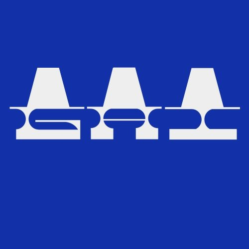
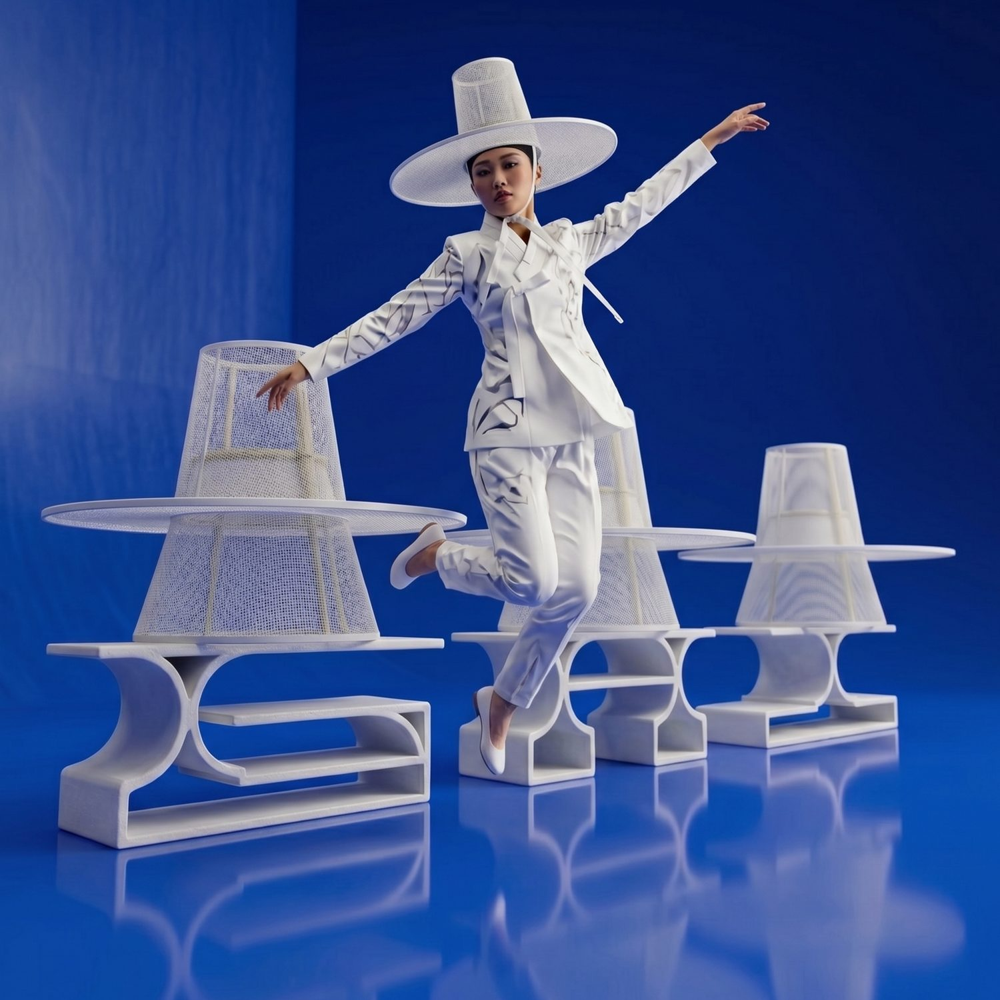
A personal project promoting the gat, the traditional Korean hat, through a logotype. Using the type to extend the brand, I created renderings, motion, posters, and editorial images with one art direction that echoes the hat.
The gat is the traditional Korean hat of woven horsehair and bamboo, with a tall crown and a wide, flat brim. In the logotype, each A takes the gat’s silhouette: the crown forms the counter-free peak and the brim becomes the crossbar that links the letters together.
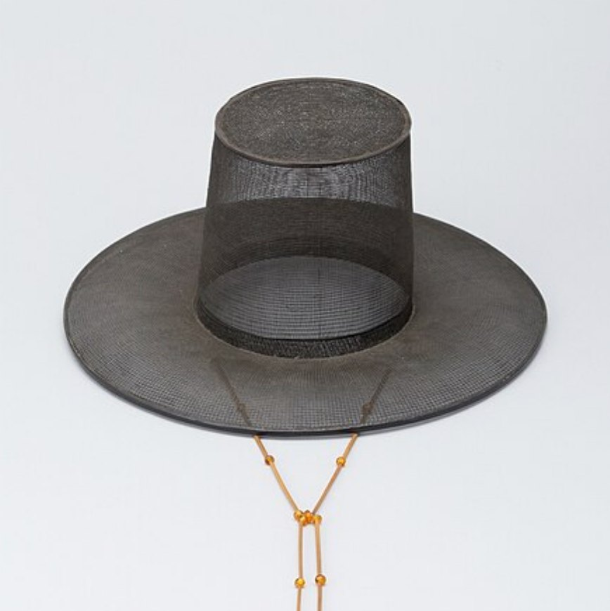
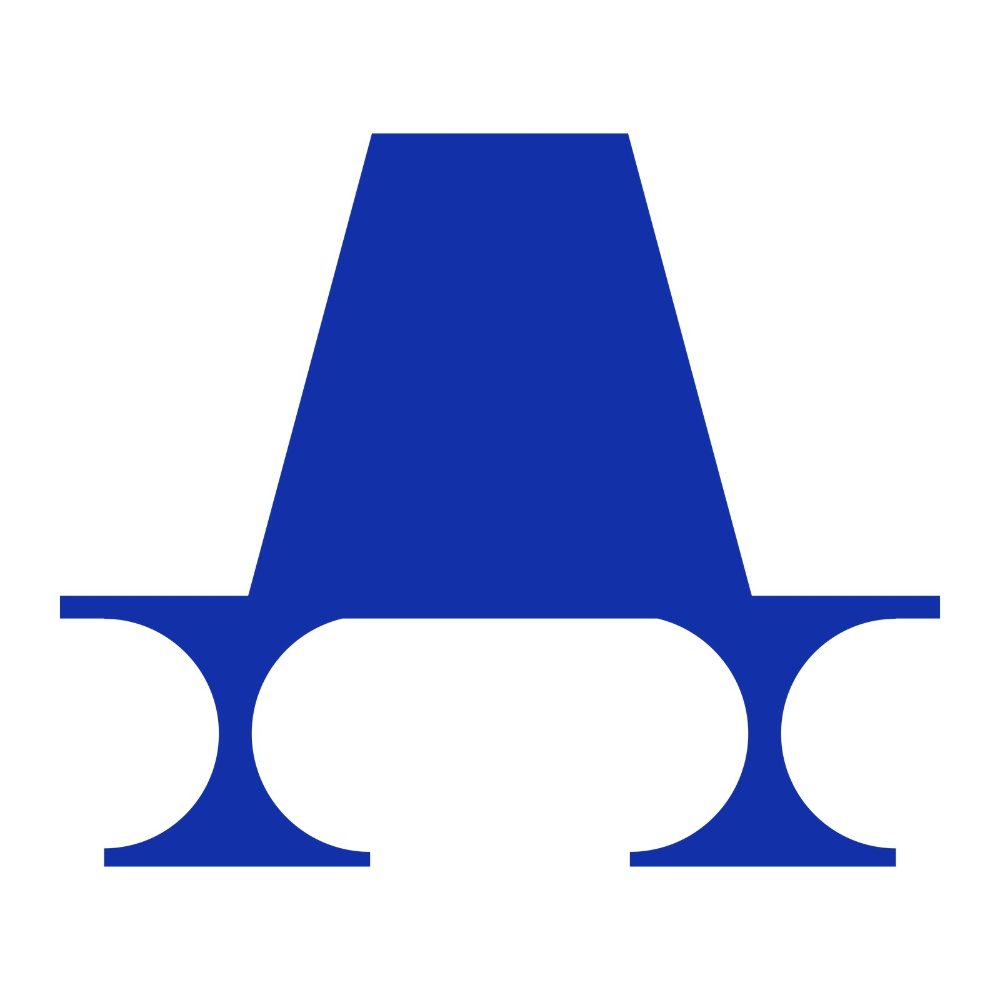
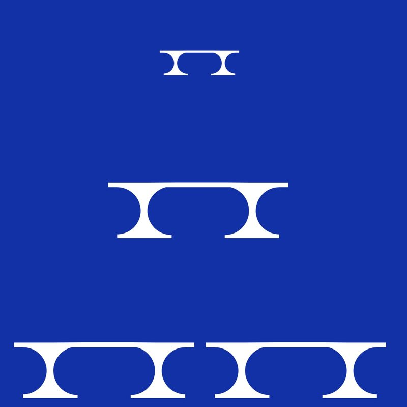
I tested how the logo moves in After Effects, and explored poster and editorial layouts that stretch the logotype into a layout system. The project taught me how to assemble an identity by extending typographic elements.
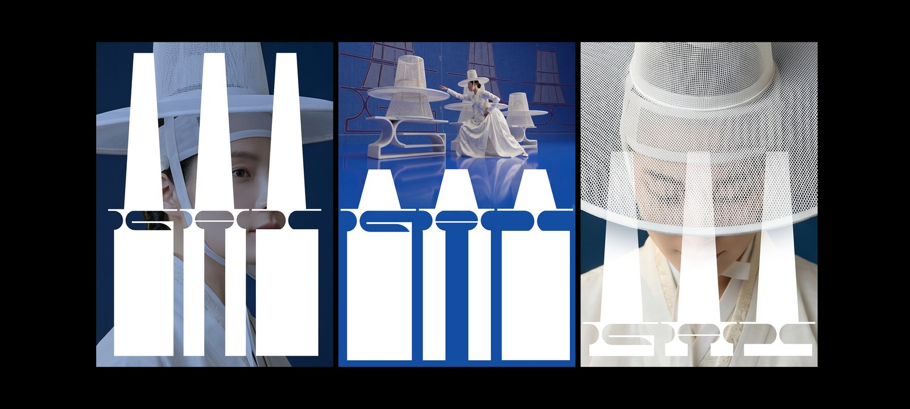
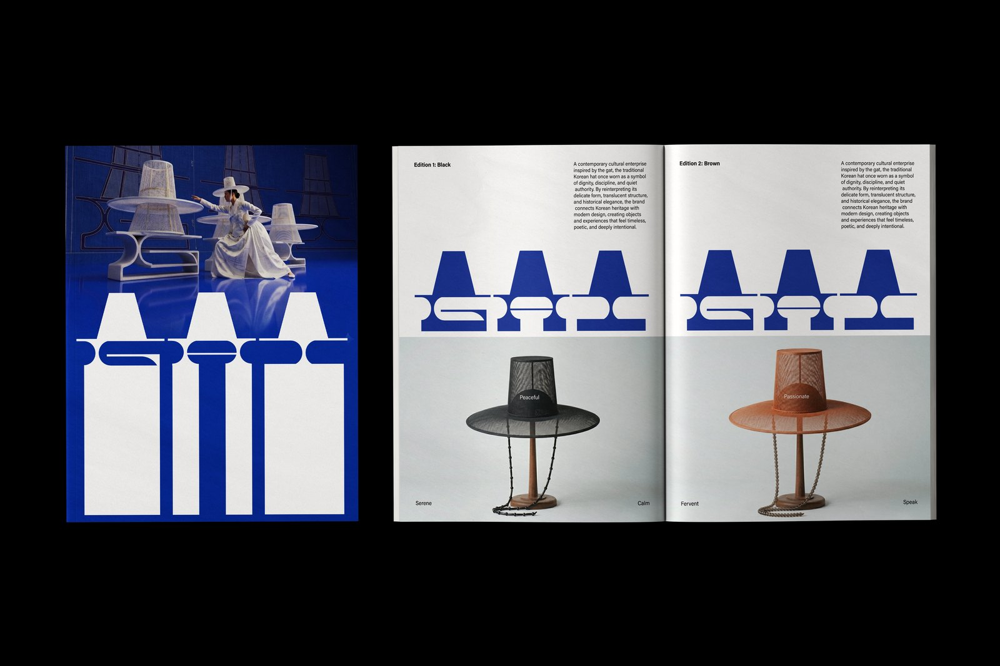
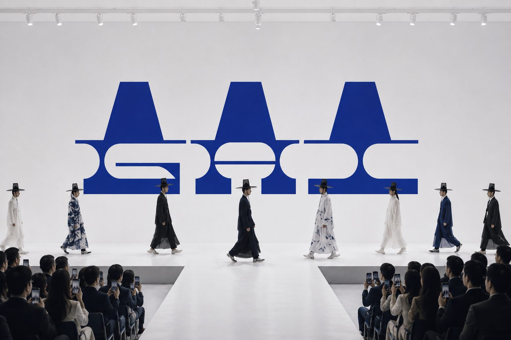
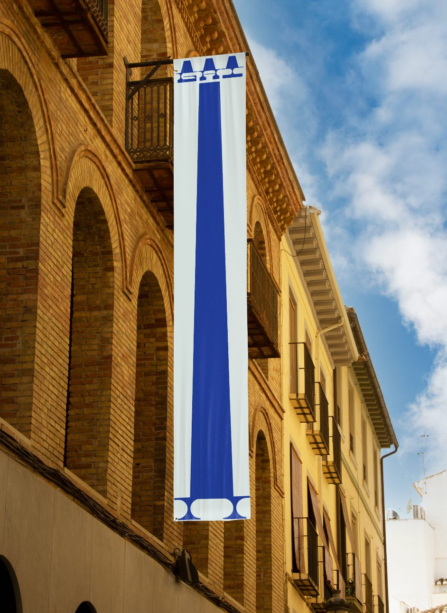
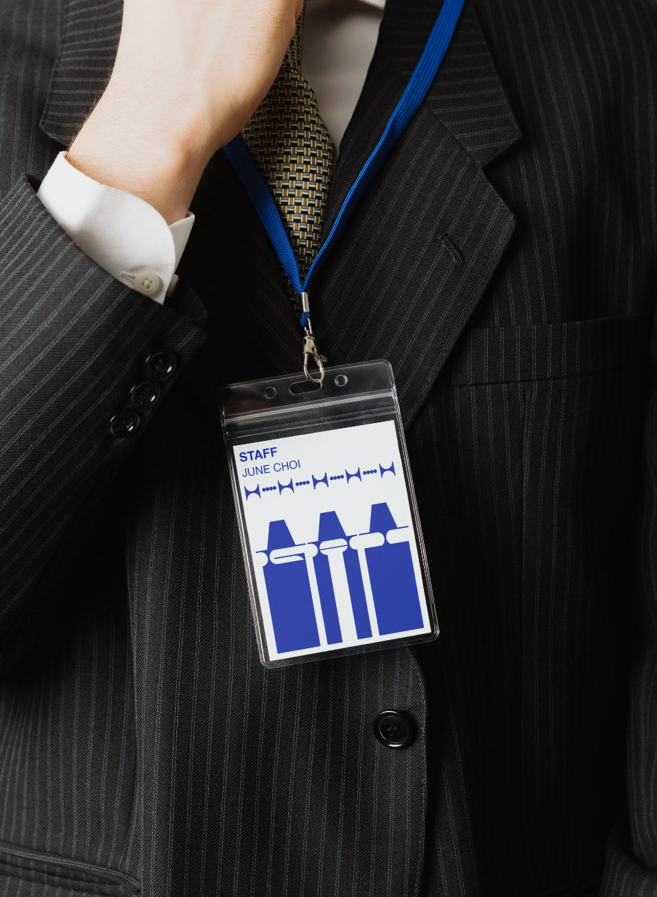
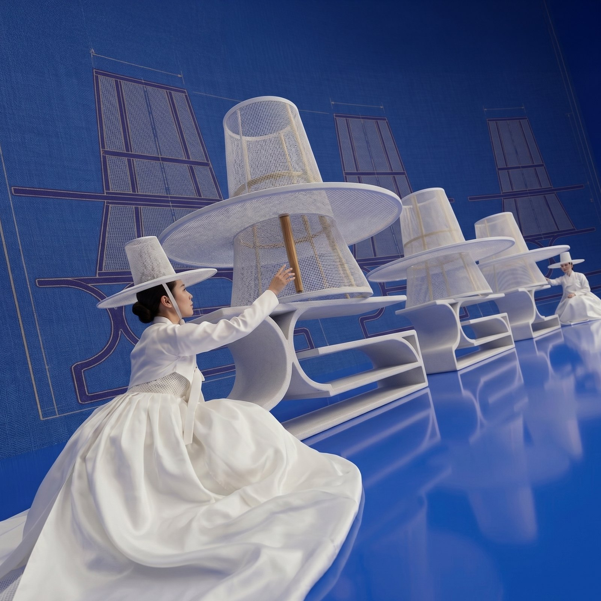
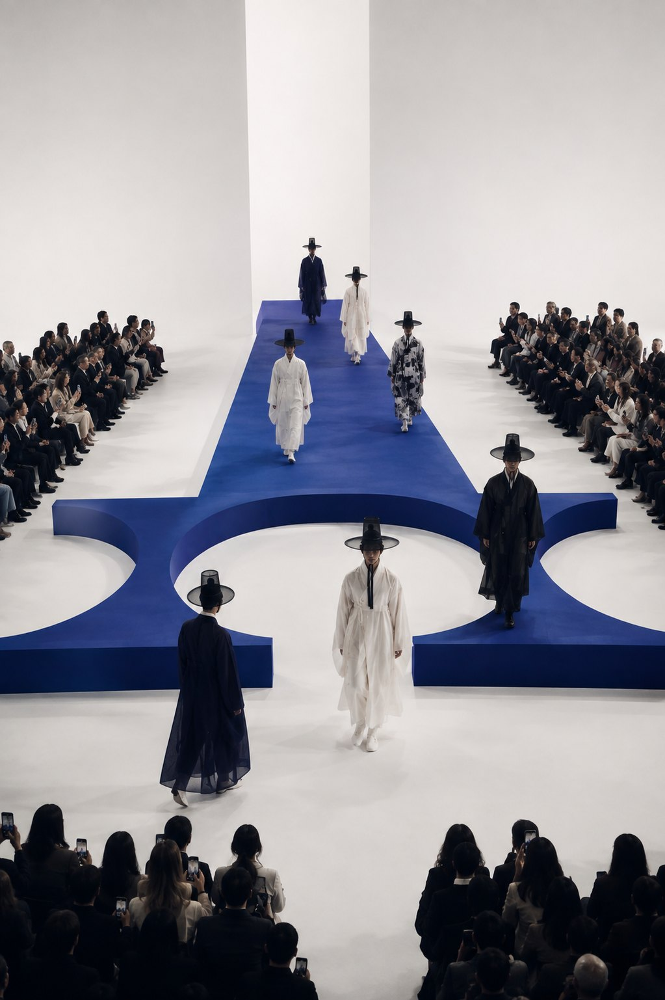
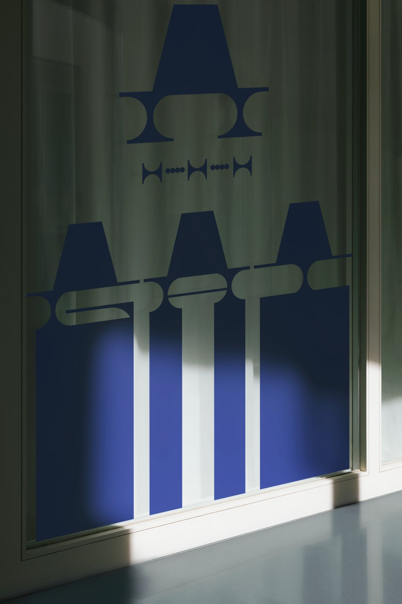